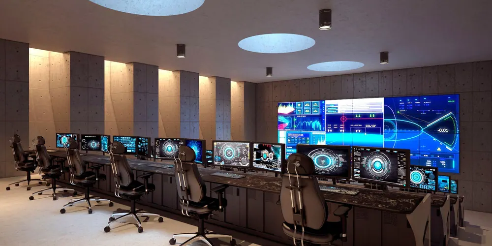

- Ana Sayfa
- Hakkımızda
Hakkımızda
Ankara Ostim Sanayi Bölgesi'nde, savunma sanayi başta olmak üzere birçok sektör için tasarım ve üretim yapıyoruz.
Biz Kimiz?
Space Dynamics, 2022’de Ankara’da kuruldu. AR-GE, tasarım, mühendislik, savunma, metal işleme ve fotokimyasal işleme alanlarında faaliyet gösteriyoruz. Ana odak noktamız uzay ve hava araçları için iç parça üretimi, tasarımı ve AR-GE süreçlerini yönetmek. İlkelerimiz: Güvenilirlik, kalite, teknik destek, müşteri memnuniyeti, yenilikçilik, sosyal sorumluluk ve etik değerlere bağlılık. Size özel çözümlerle buradayız.
Kuruluş İlkelerimiz
- Güvenilirlik
- Üretim Sonrası Teknik Destek
- Müşteri Memnuniyeti
- Sosyal Sorumluluk ve Etik Değerlere Bağlılık Prensibi

Çalışma Prensibimiz
Müşteri Memnuniyeti
Müşterilerimize en iyi hizmeti sunarak, ihtiyaçlarını en üst düzeyde karşılamak için çaba harcarız.
Yenilikçilik
İleri teknoloji ve modern üretim hattıyla donatılmıştır. Bu sayede müşterilerimize en yenilikçi çözümleri sunarız.
Güvenilirlik
Space Dynamics, Türkiye'nin farklı bölgelerinde ve yurtdışında birçok projeyi başarıyla yürütmenin güvencesini sunar.
Kaliteli Ürün
Ar-Ge, tasarım ve üretim yaparak ürünler sunarız. Müşterilerimize üstün kalitede ürünler sağlama kararlılığımızı sürdürürüz.
Daha Fazla Bilgi ve Teklif Almak İçin
Projenizi anlatın, size özel çözümle dönüş yapalım.